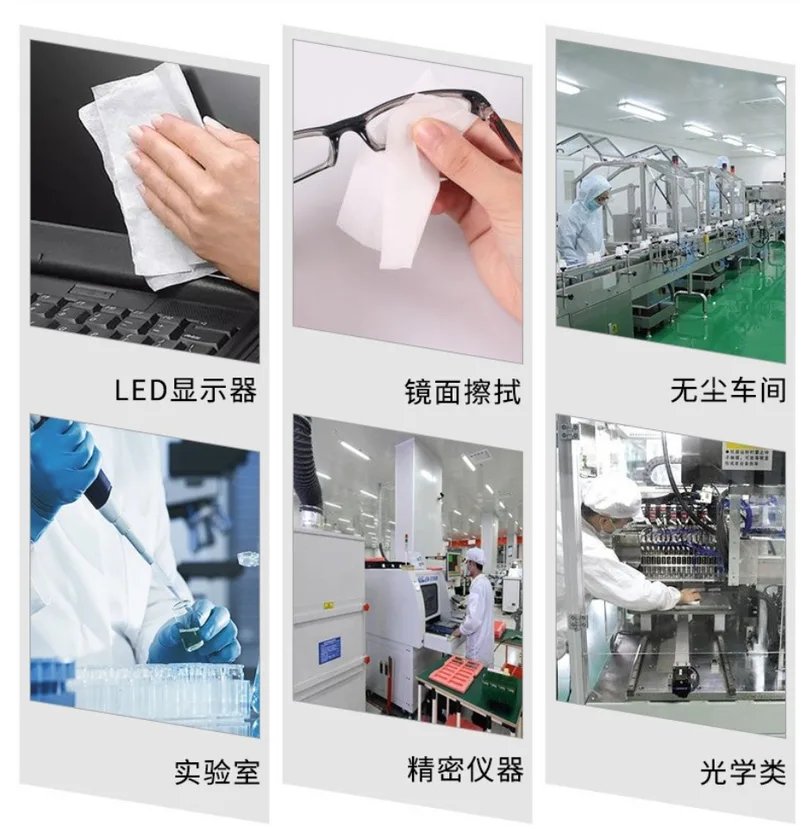

Cleanroom Wipes & Industrial Wipes Manufacturer
深圳市永新源防静电科技有限公司 — 无尘擦拭布 · 工业擦拭布 · 中国制造
Founded in 2013, a China-based manufacturer of cleanroom wipes — superfine fiber, 100% polyester double-knit, and airlaid paper. Serving semiconductor, PCB, medical device, and precision electronics industries worldwide.
Our Factory — Yongxinyuan (Longhua, Shenzhen Production Base) | 永新源防静电科技（深圳龙华生产基地）
We own and operate our specialized cleanroom wipes factory in Longhua, Shenzhen — equipped with laser cutting, ultrasonic cutting, and cold cutting production lines. As a manufacturer-direct supplier, our cleanroom wipes are produced in controlled environments suitable for Class 100~1000 cleanrooms, serving demanding industries such as semiconductor fabrication, PCB assembly, and medical device manufacturing. With 100+ employees and the registered trademark "正好" (since 2018), we are committed to quality and innovation in cleanroom consumables manufacturing.


Our cleanroom wipes are trusted across these industries for contamination control
LED displays · Laboratories · Mirror & optical cleaning · Precision instruments · Cleanrooms · Optical components

Cleanroom Wipes for Electronics, Semiconductor, Laboratory & Pharmaceutical Industries

100% polyester • High absorption • Soft & lint-free • Dry & wet use
Superfine Fiber High Absorption Lint-free 📩 Inquire & Free Sample
9"×9" (22.5×22.5 cm) • ROHS • Class 100~1000
100% Polyester Double-Knit Laser Cut 📩 Inquire & Free Sample
100% polyester double-knit • Low particle • Class 100~1000
100% Polyester Double-Knit Lint-free 📩 Inquire & Free Sample


55% Cellulose (wood pulp) + 45% Polyester • Sizes 4"/6"/9" • Vacuum packed
Airlaid Paper Strong Absorption Anti-Static 📩 Inquire & Free SampleFour Core Product Lines — Detailed Specs (matching the product images above)
| Attribute | Value |
|---|---|
| Material | 100% polyester superfine fiber (knitted, lint-free) |
| Sizes | 4"×4" / 6"×6" / 9"×9" / 12"×12" (custom sizes available) |
| Fabric Weight | 120 g/m² (industry standard) |
| Edge Seal | Laser sealed edges (standard) · Ultrasonic cut (optional) |
| Cleanliness | Class 100 (100-level purification) · suitable for Class 10000 cleanrooms |
| Application | Cleanrooms, electronics, precision instruments |
| Key Features | High absorption · Soft & lint-free · Dry & wet use · No detergent needed |
| Packing | 100 pcs/pack · Poly bag / vacuum pack |
| MOQ | 100 packs |
| Certification | RoHS · third-party test reports available on request |
| Sample | Free samples available on request |
| Customization | OEM / ODM · Custom logo & packing |
| Lead Time | 7–15 days |
| Attribute | Value |
|---|---|
| Material | 100% polyester double-knit (continuous filament) |
| Size | 9"×9" (22.5×22.5 cm) |
| Fabric Weight | 120 g/m² (industry standard) |
| Edge Seal | Laser cut, sealed edges (standard) |
| Cleanliness | Class 100–1000 |
| Particle Count (LPC ≥0.5 µm) | ≤1,100 counts/cm² (typical — test report on request) |
| Absorbency | ≥412 mL/m² (typical) |
| Application | Industrial, cleanrooms |
| Packing | 100–150 pcs/pack · Poly bag / vacuum pack |
| MOQ | 100 packs |
| Certification | RoHS · third-party test reports available on request |
| Sample | Free samples available on request |
| Customization | OEM / ODM · Custom logo & packing |
| Lead Time | 7–15 days |
| Attribute | Value |
|---|---|
| Material | 100% polyester double-knit, lint-free |
| Sizes | 4"×4" / 6"×6" / 9"×9" / 12"×12" (custom sizes available) |
| Fabric Weight | 120 g/m² (industry standard) |
| Texture | Straight-grain knit (直纹编织) |
| Edge Seal | Laser cut (standard) · Ultrasonic cut (optional) |
| Cleanliness | Class 100–1000 · low particle generation |
| Application | Cleanrooms, electronics industry |
| Key Features | Low lint & low NVR · High tensile strength · Chemical resistant |
| Packing | 100–150 pcs/pack · Poly bag / vacuum pack |
| MOQ | 100 packs |
| Certification | RoHS · third-party test reports available on request |
| Sample | Free samples available on request |
| Customization | OEM / ODM · Custom logo & packing |
| Lead Time | 7–15 days |
| Attribute | Value |
|---|---|
| Material | 55% cellulose (virgin wood pulp) + 45% polyester (nonwoven) |
| Layer / Color | Single layer · White |
| Sizes | 4" (10 cm) / 6" (15 cm) / 9" (22.5 cm) — multi-size packs available |
| Fabric Weight | 56 g/m² (industry standard) |
| Edge | Sealed edge, low lint |
| Grade | Industrial · Anti-static · Low-lint |
| Key Features | Strong absorption (oil & water) · High tensile · No scratch · Works with any cleaning liquid |
| Packing | Vacuum packed with inner individual packs · 100–300 pcs/pack |
| MOQ | 100 packs |
| Certification | RoHS · third-party test reports available on request |
| Sample | Free samples available on request |
| Customization | OEM / ODM · Custom logo & packing |
| Lead Time | 7–15 days |
| Packaging Type | Description | Application |
|---|---|---|
| Poly Bag | 100 pcs/pack, standard | Regular orders |
| Vacuum Pack | Reduced volume, maintains cleanliness | High cleanliness requirements |
| Double Bagged | Inner + outer layers | Class 100~1000 environments |
| Bulk Pack | Cost-effective bulk option | Industrial grade wipes |
| Option | Available |
|---|---|
| Custom Dimensions | Any size available |
| Custom Packaging | Custom pack quantity and type |
| LOGO Printing | Customer brand on packaging |
| Cut Method | Laser / Ultrasonic / Cold Cut |
| Trade Terms | EXW, FOB (Shenzhen), CIF (global) |
| MOQ | 100 packs per SKU |
⚠ Fabric weight, particle count and absorbency reference peer benchmarks (xwk.en.alibaba.com) and industry standards — factory test reports and certified values available on request.
Seeking distributors and agents in these regions
Expert answers about cleanroom wipes, sourcing, and industry applications | 📄 View Full FAQ (54 questions)
📄 View Full FAQ Knowledge Base (54 questions covering product, technical, industry, sourcing, and company topics)
Inquiries, samples, and partnership welcome
cmdcsz@gmail.com
Longhua, Shenzhen, China
深圳 · 龙华
📄 Download Product Catalog (PDF) | 📋 View Full Specification Sheet